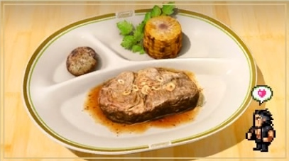

Prime Garula Rib

Description
Ribs usually refers to barbecue pork ribs which are served with various barbecue sauces.
They are served as a rack of meat which diners customarily tear apart by hand, then eat the meat from the bone.
Ingredients
- 2 to 3 pounds eye of round roast.
- 1 tablespoon ground coffee beans.
- 1 tablespoon brown sugar.
- 2 teaspoons Diamond Crystal.
- 1 teaspoon ground black peppercorns.
- 1/2 teaspoon ras el hanout.
Steps
- Rub the beef with olive oil or spray with cooking spray. Place on a rack set in a large roasting pan.
- Combine all the sauce ingredients in a bowl and refrigerate, covered.
- Preheat oven to 450 degrees. Pour some water in the pan so the drippings don’t burn and roast the meat for 30 minutes.
- Carve thinly and serve immediately with a substantial red wine such as Cabernet Sauvignon.
- Enjoy!
Home